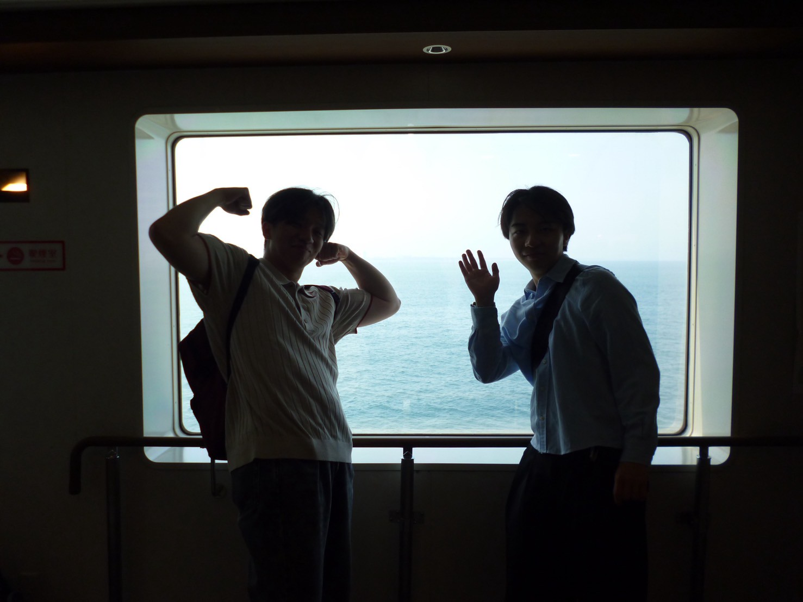
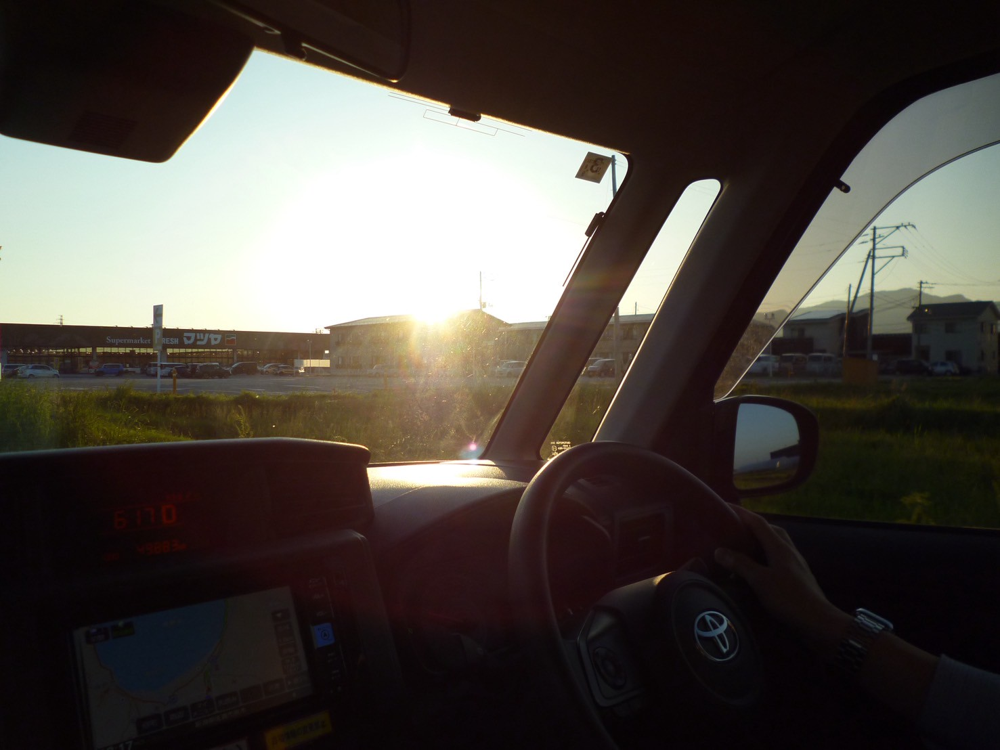

START / RYOTSU
両津港と、島へ入る時間。
船で佐渡へ渡り、両津港から車で走り出す。旅の始まりと帰り道をつなぐ、静かな導入のアルバム。


NOTE
このアルバムは特定の観光地ではなく、佐渡へ入る時間と島内を移動する時間をまとめたもの。地図上では旅の始点と終点に対応する。
船で佐渡へ渡り、両津港から車で走り出す。旅の始まりと帰り道をつなぐ、静かな導入のアルバム。


このアルバムは特定の観光地ではなく、佐渡へ入る時間と島内を移動する時間をまとめたもの。地図上では旅の始点と終点に対応する。